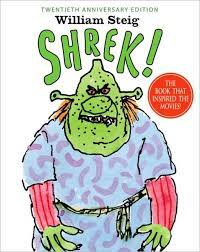

Breve resumo - sua maior obra
"Shrek" é uma franquia de filmes de animação que gira em torno da vida de Shrek, um ogro solitário que vive em um pântano. Sua vida tranquila é interrompida quando ele é enviado em uma missão para resgatar a Princesa Fiona, que está trancada em uma torre, a mando do Lorde Farquaad. Ao longo da jornada, Shrek forma laços com personagens excêntricos como o Burro e o Gato de Botas, e ele acaba se apaixonando por Fiona. Os filmes "Shrek" são conhecidos por sua combinação de humor inteligente, sátira de contos de fadas tradicionais e mensagens sobre aceitação e amor, tornando-os um grande sucesso entre públicos de todas as idades.
Personagens principais da trama

Shrek
Shrek é um ogro verde, inicialmente mal-humorado e solitário, que se torna mais amigável à medida que a história se desenrola.
Fiona
Fiona é uma princesa que, à primeira vista, parece ser uma donzela em perigo, mas revela uma personalidade forte e determinada à medida que a história avança.
Burro
O Burro é um pequeno e falante burro que se torna o fiel companheiro de Shrek ao longo da história.
Gato de Botas
O Gato de Botas é um felino aventureiro e charmoso que se junta a Shrek e seus amigos em suas missões.
Mais obras do autor
Abel Island
A história de um rato chamado Abel que fica preso em uma ilha deserta.
Sylvester and the Magic Pebble
Um conto sobre um burro chamado Sylvester que encontra uma pedra mágica.
Dr. de Soto
Uma história sobre um rato dentista que trata animais de todos os tipos
Mais sobre o autor
William Steig, nascido em 1907 e falecido em 2003, foi um autor e ilustrador notável que deixou uma marca indelével no mundo da literatura infantil e da arte. Ele nasceu no bairro de Brooklyn, Nova Iorque, e sua paixão pelas artes e pela escrita começou a se manifestar desde cedo. Steig frequentou a National Academy of Design e o City College de Nova Iorque, onde aprimorou suas habilidades artísticas. Ao longo de sua carreira, William Steig criou uma vasta coleção de ilustrações e escreveu dezenas de livros, tanto para crianças como para adultos. Ele era conhecido por seu estilo distinto de desenho e por histórias que muitas vezes apresentavam personagens animais antropomórficos em situações engraçadas e emocionantes. Entre suas obras mais conhecidas estão "Doctor De Soto," "Abel's Island," e "Sylvester and the Magic Pebble." Uma das maiores realizações de William Steig foi o livro "Shrek," que inspirou a franquia de filmes de animação de sucesso. Suas histórias eram frequentemente repletas de humor inteligente, personagens cativantes e mensagens atemporais sobre aceitação, coragem e amizade. William Steig recebeu inúmeros prêmios ao longo de sua carreira, incluindo a Caldecott Medal por "Sylvester and the Magic Pebble" em 1970. Sua influência no mundo da literatura infantil e da ilustração é duradoura, e suas obras continuam a encantar leitores de todas as idades, demonstrando a intemporalidade e a universalidade de suas histórias e ilustrações.